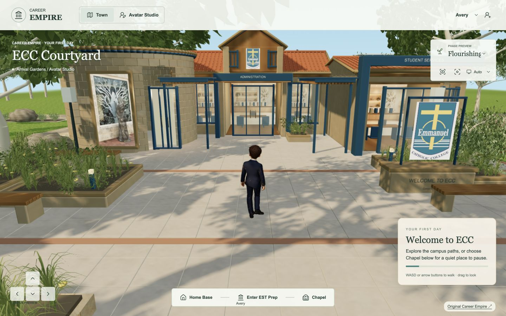
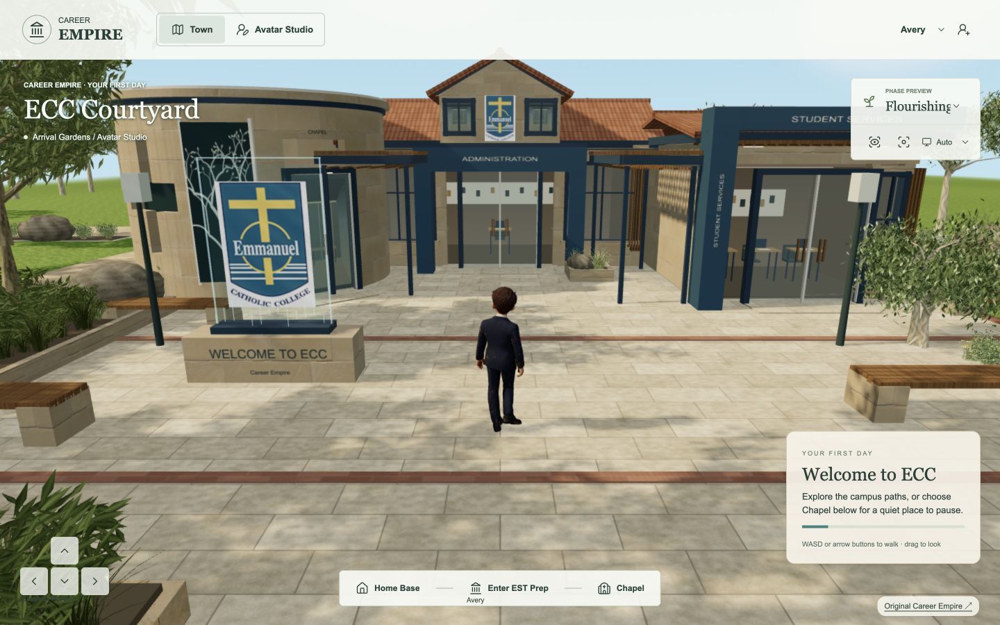
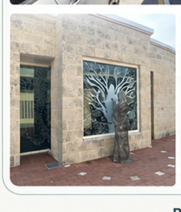
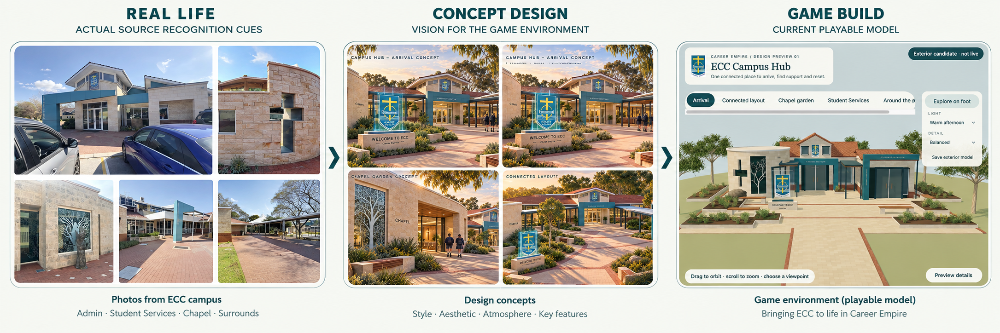
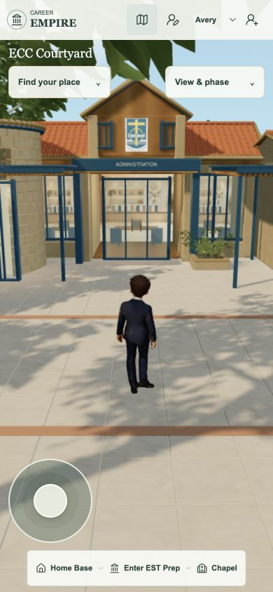

Career Empire · ECC courtyard · 13 September 2026
Local playable reviewA rebuilt courtyard.
The same game underneath.
New connected architecture, deeper rooms and a fuller planted approach. Your welcome sign is on the right, and your iconic chapel photograph is beside the entrance.
Same player. Same camera.


Previous courtyardRebuilt courtyardThe original ECC crest is preserved. Home Base returns to the relocated sign; the main approach remains open.

The chapel’s recognition featureYour actual tree-glass and figure photograph is used at the entrance. Its small source size limits close-up detail; this is a photographic surface.
The reference still governs.

This is an authored quality candidate. The 80–90% perceived-richness target is not signed off. Natural planting variety, close-up interior dressing and the chapel feature still need to close the remaining gap before wider rollout.
Measured cost, preserved play.
Final short desktop samples: 51–60 FPS before; 32–47 FPS after. Runs varied, including an earlier rebuilt sample at 60 FPS. These are local observations, not a sustained school-device benchmark. New runtime files total 5.82 MB.
Seven walking routes pass. Chapel reflection, Studio save-and-return, the moved Home Base and phone-size controls were checked. Automated browser CI remains blocked at browser launch; the full check is not green.
View the phone-sized game capture
